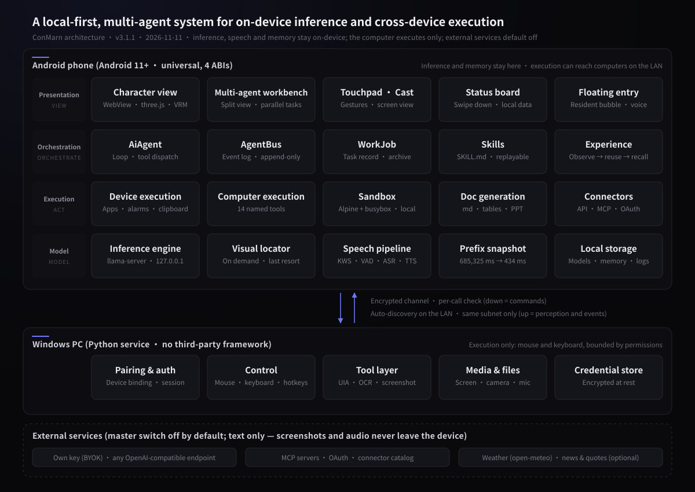

ON-DEVICE INFERENCE · LOCAL-FIRST · MULTI-AGENT
ConMarn
A local-first multi-agent system for on-device inference and cross-device execution.
An AI character runtime that runs entirely on the user's own Android device. Models, speech and memory never leave the phone, and every outbound request is governed by a single master switch that is off by default. Beyond conversation it operates the phone and a paired computer, and advances several tasks at once.
The constant prefix takes about 11 minutes to compute on first run; once persisted, it restores in 434 ms.
The upper bound on tasks the multi-agent workbench advances at once — each can take follow-ups, stop, or archive.
All passing, zero failures. Figures are read from the build output, not estimated.
Character and room
A three-dimensional character in an interactive room. Window light follows real weather and time of day; objects can be tapped to start an action.
Multi-agent workbench
Three tasks advance in parallel, each open to follow-ups, stops and archiving. Events are recorded per task and the process remains reviewable.
Drone dispatch
External devices join through API connectors: route, telemetry and task share one surface, with pause and return-to-home.
Robotic arm
Pick-and-place runs step by step, with joint angles and end-effector coordinates read back live. Each step can be stopped independently.
The phone reasons; the desktop acts
The desktop program gathers the machine's capabilities into one window: camera and microphone switches, file exchange with the phone, pairing status, runtime log and start-at-login. The program itself takes no part in pairing or encryption — a background service on the same machine does that. Closing the window does not affect the phone connection. The desktop program is an optional companion to the phone app.
Overview
Uptime, phone connection, pairing state, connection details, the current pairing code and recent events on a single page.
Files
The local transfer directory and the phone's sit side by side. Upload, send and fetch happen in place; duplicate names advance rather than overwrite.
Pairing
The pairing QR appears only after the login PIN is entered. Both the QR and the pairing code are single-use; unpairing requires the phone to pair again.
Screenshots use sample data.
How it differs from a cloud assistant
The difference is not that one capability is stronger. It is that four dimensions change at once: where data lives, what may be executed, how many things run at a time, and who pays.
The full path of one request
From capture to receipt there are six stages, each with a defined fallback when it fails.
Capture
Local wake word and voice activity detection, fully offline. The microphone closes while ConMarn is speaking.
Interpret
The on-device model parses intent and decides whether to answer, ask back, or act.
Orchestrate
The task is decomposed into steps and distributed across roles in the workbench, up to three at once.
Execute
Actions run on the device, inside the sandbox, or over the local network on the paired computer.
Verify
Input actions are read back and compared; visual actions are judged by pixel change. Any mismatch is reported as an error.
Respond
The result is stated in speech and expression, together with the actions that may follow.
Four layers, one division of labour
The phone carries all inference; the computer carries execution only. This is a diagram of authority, not of deployment.

Eight capabilities
Character, execution and orchestration share one on-device inference substrate. Each can be switched off independently.
Character and scene
A three-dimensional character in an interactive room. Window light follows real weather and the day-night cycle; greetings and the day's agenda are delivered by time of day.
Speech
Wake word, segmentation, recognition and synthesis all run locally, fully offline. Capture closes during playback, so it does not trigger itself.
Computer-side tools
Fourteen named tools with a three-tier fallback — control tree, then text recognition, then visual localization — rising from milliseconds to seconds.
Device and sandbox
Operates native apps and the calendar. A built-in sandbox provides a userspace Linux environment that requires no root.
Multi-agent workbench
Three tasks in parallel, each open to follow-ups, stops and archiving. Events are recorded per task and the process remains reviewable.
Skills and experience
Completed procedures settle into replayable skills; observed experience is recalled in later tasks. All of it stays on the device.
Pairing and transfer
Peer-to-peer over the local network, with rotating pairing codes and one-time passphrases. Files transfer both ways with integrity checks.
Cloud and connectors
The user supplies the key; mainstream protocols are supported. MCP, OAuth and custom endpoints are available, all governed by the master switch.
Four design decisions
What these four share: each one narrows the gap between what appears possible and what is actually done.
Prefix snapshot
The system prompt and the tool table form a constant prefix of roughly 4,889 tokens. Computing it on a phone takes 685,325 ms the first time; once written to disk it restores in 434 ms. The cost is a byte-exact coupling to the model and the prompt — any change forces a recompute.
A tool table that does not grow
The tool table the model can see is that prefix. So only the resident computer-side hand exposes named tools; every other capability shares a single generic entry point, with its inventory placed in the tool result — which sits after the cache and so does not break the snapshot. One tool or twenty cost the same prefix.
Honest receipts
Input actions are read back and compared after completion; a mismatch is an error. Visual actions are judged by whether pixels changed. A successful call is never reported as a successful outcome, and every receipt states what may be done next.
One master switch
The cloud fallback channel is the only outbound switch. Turning it off stops weather, page reading, cloud execution and connectors from sending anything. There is no per-item toggle, so no item can be missed. The switch lives in Settings and is off by default.
What can and cannot be promised
Both columns are stated side by side so that a reader can judge the third one — the items left unmentioned that are still worth asking about.
Specifications and scale
Every figure below is read from the source tree, the build output or the installed package on device. None are estimates.
What this does not do
Half of a product's credibility comes from how much it claims; the other half from how much it admits it does not.
Frequently asked
Six questions worth reading before installing.
Does it need a network connection?
Which devices can install it?
Is there a cost?
What happens without the computer-side component?
Is any data uploaded?
Why is there no iOS version?
Open source and commercial model
The full source is published under Apache-2.0 and personal use is free. Commercial revenue comes from licensing, deployment and maintenance for institutions — not from limiting individual users.
Inference happens on the device, so the personal edition carries no server-side cost and growth does not increase spend. Institutions buying locally-run software need to audit the code and confirm that data stays inside their network; open source is the precondition for that market, not a concession.
Keep the model in your own hands
Free · open source · no account · no subscription